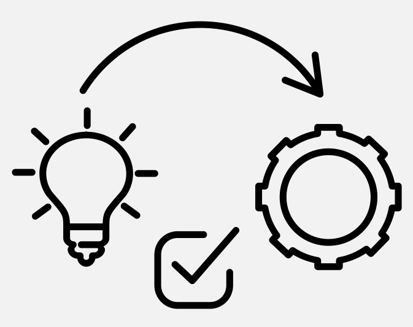
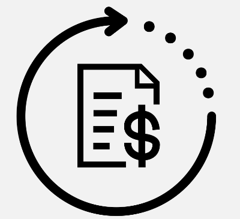
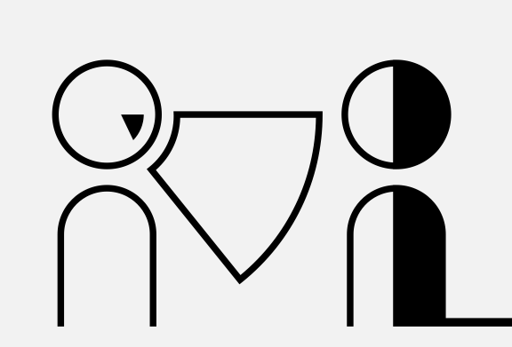

4. 스크럼 적용
조직 내에서 스크럼 실천 및 관리 방법
스크럼은 프로젝트의 통제를 목적으로 한다. 가장 간단한 규칙의 적용을 통해 추구한다. 퍼트차트, 업무 시간 추적, 현황 파악같은 관리도가 없어도 된다.
관리자의 프로젝트 관리 비용은 줄이고 실무자의 프로젝트 권한은 더 강화한다. 관리자는 팀의 코치이자 서포터로 역활이 변경된다.

신규 프로젝트에서 스크럼 실천하기
기존 요구 사항을 중심으로 제품 백로그를 만들고 기존 기술위에 핵심 기능만 구현한다. 스프린트의 목표는
"선택한 기술을 이용해 핵심 기능을 시연한다."

초기 스프린트에는 두 가지 목적이 있다.
- 첫째, 팀은 개발 환경을 정착시켜야 한다.(개발환경, 코드 및 빌드 규칙, 테스트 플렛폼등 기능을 개발하기 위한 모든것)
- 둘째, 팀은 핵심 부분을 구현 해야 한다.
팀이 첫 스프린트를 하는 동안 제품 책임자와 고객은 백로그를 추가하고 정돈한다.
진행 중인 프로젝트에서 스크럼 실천하기
수 개월을 사용했지만 아무것도구현 하지 못했을 경우는 고객과 팀이 할 수 있다고 만드는게 최우선이다. 그러므로 스프린트의 목표는
"선택한 기술을 이용해 어떤 사용자 기능이든 시연한다."
일일 스크럼을 통해 장애물을 제거하고 어떤 기능이든 구현해서 시연한다. 이 후 검토회의와 계획 회의를 통해 스크럼을 시작한다.
엔지니어링 실천법 개선하기
모델링, TDD, 일일 빌드등 생산성을 높이는 개발 방법론은 도입하고 반대로 하락시키는 방법론은 제거하라. 최고의 스크럼 마스터는 훌령한 엔지니어일 가능성이 높다.
협업을 통한 비지니스 가치 구현
시스템 개발의 전통적인 접근법은 비전과 전반적인 요구사항을 정의하는 것으로 시작한다. 그 다음 개발조직이 비용을 산정하고 예산을 책정해 구현을 시작한다. 고객은 자신이 상상한 비지니스 가치를 제공 할것이라 생각 하지만 구현 후 몇 개월이 지나도 그런일을 없다.
스크럼에서는 3번의 스프린트 즉 3달 안에 개발 할 수 있고 우선순위가 높은 요구사항을 먼저 정리한다. 나머지는 제품이 구현됨에 따라 알게 된다. 팀은 3달 추정치를 준비하고 고객은 3달 안에 구현될 제품 백로그에 예산을 할당한다.

스프린트 끝자락에 팀은 관리자와 개발된 기능을 검토하고 가치를 평가한다. 해당 기능의 가치가 투여한 개발비 만큼 되는가? 개발은 예측 대로 진행되는가? 해당 기능으로부터 고객은 비지니스 가치를 얻을 수 있는가? 현재를 기준으로 다음은 무엇이 제작되어야 하는가? 를 결정한다. 관리자는 30일 마다 프로젝트를 방향을 조정할 권한을 갇는다.
첫 3개월이 지난 후, 경영진은 개발된 기능을 기준으로 만족한다면 백로그에서 다음 우선 순위를 설정 한다. 만약 6 개월 이 필요하다면 전 3개월의 평균 * 6으로 비용을 산정한다.
스크럼 관리의 예시
첫 번째 스프린트를 하기 전 일의 양이 800 시간이라고 추정하고 매달 팀이 100시간의 일을 처리 할 수 있다고 가정해보자. 그렇다면 8개월 후 면 프로젝트가 완성된다고 예측 할 수 있다.
아래 그래프는 백로그 그래프라고 부르며 x 축은 시간(단위 달) y 축은 남은 일의 양(단위 시간)이다. 파랑 라인은 예상 진행도 이고 빨강라인은 실제 프로젝트의 진행도를 의미한다.
첫 스프린트전 계획

첫 스프린트 후
첫 스프린트에서 개발지연이 발생해 예상보다 적은 50시간의 일만 처리 했다.그렇다면 750 시간이 남았음으로 경영진에게 프로젝트가 지연 될것같다고 보고 하고 계획을 수정한다. 전 계획 보다 약 2 주 지연이 예상된다고 보고한다.

두 번째 스프린트 후
두 번째 스프린트에서 좋은 솔루션을 찾아서 250시간의 일을 처리했다 . 그래서 전 계획보다 약 3 주 정도 일찍 종료 될것이라고 보고하고 프로젝트를 수정한다.

위와 같이 스프린트 종료시(약 30일) 현재 상황을 기준으로 지속적으로 계획을 수정 하는것이 스크럼의 핵심이다.
경험 주의적 관리
스크럼의 관리자는 축구의 코치와 비슷하다. 팀을 돕기 위해 모든것을 하지만 경기 결과는 팀이 결정한다. 관리자는 직접적인 관찰과 백로그 그래프를 사용해서 팀의 상태를 파악하고 방애물을 제거한다.

일정에 맞추지 못하는가? 그렇다면 기능을 줄여라. 기능을 못줄인다면 성능을 줄여라. 또는 비용을 더 받아 스프린트를 동시에 돌릴 개발팀을 추가하라. 등등. 여러 방식으로 관리를 할 수 있다.
직접적인 관찰을 빈번하게 하라.
팀과 팀원을 직접적으로 관찰해서 팀의 협동 정신, 각 팀원의 참여도, 팀원간의 상호작용, 결정해야 할 사항들과 제거해야 하는 장애물이 무언인지 관찰해라. 팀원 중 한 명이 의기소침해 있다면 왜 그런지 알아내서 도와라. 대부분의 팀원들이 버둥대고 있는 느낌이 든다면 그들이 가지고 있는 문제를 파악해라.
관찰해서 문제가 있다면 해결해 주고 지원해 주어라.